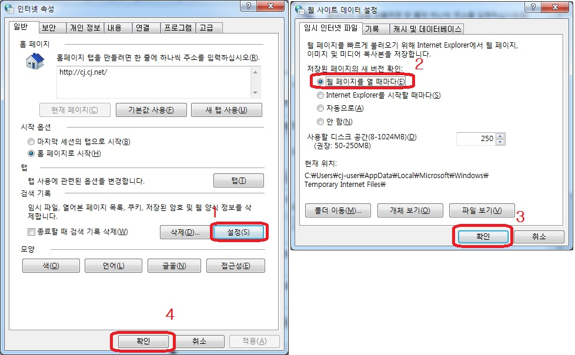

NPlus / CNPlus 설치 및 복구안내
프로그램이 정상적으로 설치되지 않을 경우 아래 제시된 내용으로 해결 할 수 있습니다.
-
1. 신규설치
1-1. 인터넷 옵션확인
※ 이미지 클릭시 확대됩니다.
1-2. 사이트 접속
·NPlus ( http://nplus.doortodoor.co.kr )
·CNPlus ( http://cnplus.doortodoor.co.kr )
※ 인터넷 실행 시 마우스 우클릭[관리자 권한으로 실행]으로 실행하세요.
-
2. 수동설치
1-1. 인터넷 옵션확인
※ 이미지 클릭시 확대됩니다.
2-2. 프로그램 수동설치
01. ( Uninstall_miplatform320U_include_Reg.zip )
NPlus 관련 모듈 삭제파일을 다운받아 압축을 푼 뒤 실행하세요.
(실행 후 화면 Enter 키 클릭으로 진행)02. ( MiPlatformInstallEngine320U_CJ_NPlus.zip )
Nplus/CNPlus 수동설치파일을 다운받아 압축을 푼 뒤 실행하세요.※ Windows 버젼이 비스타 이상일 경우(Win7, Win8...) 파일 실행 시
마우스 우클릭 [관리자 권한으로 실행]으로 실행하세요.2-3. 사이트 접속
·NPlus ( http://nplus.doortodoor.co.kr )
·CNPlus ( http://cnplus.doortodoor.co.kr )
※ 인터넷 실행 시 마우스 우클릭[관리자 권한으로 실행]으로 실행하세요.
-
3. OZ뷰어 재설치
3-1. 운송장출력(OZ) 실행 시 운송장폼이 나타나지 않는 경우
1) NPlus/CNPlus 종료.
2) C:\Program Files\Forcs\OZ Family\NPlus 폴더 삭제.
3) NPlus/CNPlus 로그인 시 자동설치.※ 이미지 클릭시 확대됩니다.
운송장출력(OZ) 프린터 실행 시 오류 - 프린터 드라이버 재설치 필요
3-2. 사이트 접속
·NPlus ( http://nplus.doortodoor.co.kr )
·CNPlus ( http://cnplus.doortodoor.co.kr )
※ 인터넷 실행 시 마우스 우클릭[관리자 권한으로 실행]으로 실행하세요.
-
4. AxRimg.cab 이미지컴포넌트 수동설치
4-1. AxRimg 이미지컴포넌트 설치 오류나는 경우
1) AxRimg.zip 파일 다운
2) 압축을 푼 뒤 AxRimg.inf 파일을 마우스 우클릭 한 뒤 [설치]를 클릭한다.
(경고창이 나올경우 모두 [아니오]클릭)
3) C드라이브 아래에 KOTECH란 폴더를 만들고 AxRimg.ocx, RImgCtrl.ocx 파일을 복사한다.
4) [윈도우]+[R]키를 눌러 명령어를 수행한다.
- regsvr32 "C:\KOTECH\AxRimg.ocx"
- regsvr32 "C:\KOTECH\RImgCtrl.ocx"※ 이미지 클릭시 확대됩니다.
4-2. 사이트 접속
·NPlus ( http://nplus.doortodoor.co.kr )
·CNPlus ( http://cnplus.doortodoor.co.kr )
※ 인터넷 실행 시 마우스 우클릭[관리자 권한으로 실행]으로 실행하세요.
-
5. XecureWeb ClientSM 오류 및 xw_install.cab 수동설치
5-1. xw_install.cab 설치시 오류
1) xw_install.zip 파일 다운.
2) 압축을 푼 뒤 xw_install.exe파일을 실행한다.
3) "실행중인 프로그램"은 "확인" 버튼으로 중지한다.※ 이미지 클릭시 확대됩니다.
5-2. 사이트 접속
·NPlus ( http://nplus.doortodoor.co.kr )
·CNPlus ( http://cnplus.doortodoor.co.kr )
※ 인터넷 실행 시 마우스 우클릭[관리자 권한으로 실행]으로 실행하세요.
※위 사항으로 해결이 안될 시 통합컨택센터(1577-0807)로 연락바랍니다.